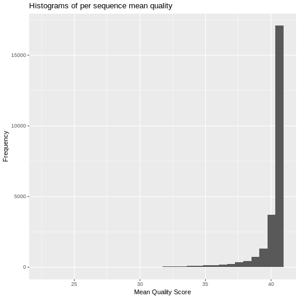

%\VignetteIndexEntry{quality control analysis and visualization using qckitfastq } %\VignetteEngine{knitr::rmarkdown} %\VignetteEncoding{UTF-8}
I. Pre-processing of FASTQ files
We first install the package from github by using devtools
Then we specify the path to the FASTQ file and run analysis and visualization functions on it. Here, for example, we use a system file with 25,000 reads as an example.
library(qckitfastq) infile <- system.file("extdata", "10^5_reads_test.fq.gz", package = "qckitfastq")
To open FASTQ files, we can replace the infile argument with path to the FASTQ file.
#infile <- "Data/10^5_reads_test.fq.gz"
For some functions based on seqTools, we will first process the file through seqTools and then let qckitfastq functions proceed with the analysis.
fseq <- seqTools::fastqq(infile)
## [fastqq] File ( 1/1) '/home/travis/miniconda/envs/test-env/lib/R/library/qckitfastq/extdata/10^5_reads_test.fq.gz' done.
II. Metrics of FASTQ quality control
1. data dimension
dimensions function obtains the number of reads and number of positions from a seqTools processed FASTQ file. The sample file has 25,000 reads and 100 positions. This section allows us to examine whether the sequence length are uniform throughout the entire file. The results from this section can also help with further analysis like overrepresented_kmer, where dimensionality of data is important for calculation.
nc <- dimensions(fseq,"positions") nc
## [1] 100
nr <- dimensions(fseq,"reads") nr
## [1] 25000
plot_sequence_length function generates distribution plot of the length of all reads. The generated plot would show the sequence length of all the sequences throughout the file. The plot is considered an indication of good data quality is all sequences have the same sequence length with no deviations. The following plot shows that all reads in the file have sequence length of 100.
plot_sequence_length(fseq,writefile=FALSE)
2. per base quality score statistics
basic_statistics function calculates the quality score per sequence statistics including mean, median and quantiles. We will use the result to create a quality score distribution per position plot to present the overall dispersion and concentration of quality score per position of the FASTQ file.
bs <- basic_stat(infile,FALSE) knitr::kable(head(bs))
| q01 | q25 | median | q75 | q99 |
|---|---|---|---|---|
| 2 | 32 | 32 | 32 | 32 |
| 12 | 32 | 32 | 32 | 32 |
| 27 | 37 | 37 | 37 | 37 |
| 27 | 37 | 37 | 37 | 37 |
| 27 | 37 | 37 | 37 | 37 |
| 27 | 41 | 41 | 41 | 41 |
plot_quality_score(bs,writefile=FALSE)
plot_quality_score function generates boxplot of quality score distribution per base.In this section, we would like to examine whether certain portion of the sequences have generally low quality score. If a subset of seqences have quality score generally small(<30)
3. nucleotide sequence content
sequence_content calculates the total number of each nucleotide sequence content per sequence throughout the file.
scA <- sequence_content(fseq, content = "A",writefile=FALSE) scA
## [1] 4351 5341 5995 6262 6624 6689 6689 6637 5974 6183 6569 7783 6789 6164 ## [15] 6376 6889 6823 6757 7034 7088 7417 6927 6581 7127 6573 6982 6709 6892 ## [29] 6791 7285 7265 6893 7267 7493 6949 6875 6731 6506 7256 7523 7849 7482 ## [43] 7341 6960 7460 7543 7214 6863 6693 6785 7275 7677 7336 7381 7891 7620 ## [57] 7692 7180 7501 6997 7368 7245 7679 7747 7651 7511 7133 7097 7606 7816 ## [71] 7757 7482 7679 7317 7805 7492 7281 7067 7204 7245 6940 7199 7639 7607 ## [85] 7945 7660 7274 7624 7398 7333 7885 7767 7407 8121 7647 7807 7778 7692 ## [99] 7627 8136
plot_sequence_conent use the sequence_content function and plot the percentage of all nucleotide sequence content per position. The plot would be considered an indication of good data quality when the percentage of each nucleotide sequence content is not significantly larger than other nucleotide sequence contents. In this section, we examine whether each nucleotide sequence content are distributed evenly at all bases. The data is problematic if any sequence bias greatly from other sequence content in any subset of sequences.
plot_sequence_content(fseq,nr,nc)
## No id variables; using all as measure variables
4. GC content
Function GC_content utilizes the result from the C++_calling function GC_per_read and produce the data frame that is more suitable for the plotting purpose as well as for saving to data file for later access. The result is the GC content percentage per read and will be saved in resulting table.
gc_df <- GC_content(infile) knitr::kable(head(gc_df))
| meanGC |
|---|
| 43 |
| 37 |
| 39 |
| 40 |
| 42 |
| 38 |
The plot_GC_content_plot function takes the input from previous function and generates plot of distribution of GC nucleotide sequence content percentage. The graph would be an indication of good data quality when the GC percentage concentrated around 30 to 50 and the results do not differ among different bases.
plot_GC_content(nc,gc_df)
5. Per read sequence quality score
plot_perseq_quality function extracts the mean quality score per read and generate a histogram of this statistics.It takes the input of the path to the gzipped FASTQ files. It also enables plot saving if set writefile to TRUE and input a prefix value to customize name of saved file. The histogram would be considered an indication of good data quality when the majority of reads have high quality score(around 30). If a significant portion of read are with low quality score, say less than 20, then data is problematic.
plot_perseq_quality(infile,writefile=FALSE)

6. Kmers count per base
kmer_count function produces the per position kmer count with given path to the FASTQ file and the kmer length specified.
km <- Kmer_count(infile,k=6)
## [fastq_Klocs] File ( 1/1) '/home/travis/miniconda/envs/test-env/lib/R/library/qckitfastq/extdata/10^5_reads_test.fq.gz' done.
knitr::kable(km[1:20,1:10])
| 1 | 2 | 3 | 4 | 5 | 6 | 7 | 8 | 9 | 10 | |
|---|---|---|---|---|---|---|---|---|---|---|
| AAAAAA | 14 | 9 | 44 | 18 | 33 | 42 | 69 | 163 | 41 | 34 |
| AAAAAC | 8 | 4 | 1 | 24 | 2 | 9 | 21 | 14 | 142 | 5 |
| AAAAAG | 2 | 2 | 0 | 3 | 2 | 3 | 2 | 2 | 1 | 1 |
| AAAAAT | 8 | 28 | 29 | 34 | 44 | 34 | 33 | 65 | 28 | 58 |
| AAAACA | 0 | 2 | 5 | 4 | 4 | 3 | 4 | 6 | 3 | 3 |
| AAAACC | 2 | 8 | 4 | 1 | 25 | 2 | 9 | 21 | 15 | 143 |
| AAAACG | 1 | 2 | 2 | 0 | 0 | 1 | 2 | 0 | 2 | 2 |
| AAAACT | 0 | 2 | 1 | 2 | 4 | 3 | 0 | 2 | 3 | 0 |
| AAAAGA | 0 | 0 | 0 | 1 | 1 | 2 | 1 | 1 | 1 | 0 |
| AAAAGC | 1 | 3 | 1 | 0 | 0 | 1 | 2 | 0 | 3 | 4 |
| AAAAGG | 3 | 4 | 7 | 2 | 3 | 3 | 3 | 3 | 7 | 4 |
| AAAAGT | 0 | 2 | 2 | 2 | 1 | 0 | 2 | 2 | 3 | 0 |
| AAAATA | 6 | 6 | 24 | 11 | 6 | 9 | 18 | 17 | 10 | 29 |
| AAAATC | 1 | 0 | 2 | 0 | 2 | 0 | 0 | 3 | 2 | 1 |
| AAAATG | 0 | 3 | 0 | 0 | 1 | 2 | 1 | 2 | 3 | 3 |
| AAAATT | 9 | 6 | 32 | 28 | 31 | 42 | 32 | 32 | 65 | 27 |
| AAACAA | 0 | 1 | 3 | 0 | 6 | 1 | 1 | 3 | 3 | 0 |
| AAACAC | 2 | 3 | 1 | 5 | 3 | 4 | 4 | 4 | 2 | 3 |
| AAACAG | 5 | 0 | 1 | 4 | 4 | 1 | 3 | 0 | 2 | 1 |
| AAACAT | 2 | 1 | 3 | 4 | 1 | 2 | 0 | 0 | 3 | 3 |
7. Overrepresented Kmers
The function generates list of overrepresented kmers with its maximum obs/exp ratio and the position of maximum obs/exp ratio.
overkm <-overrep_kmer(infile,7,nc,nr)
## [fastqq] File ( 1/1) '/home/travis/miniconda/envs/test-env/lib/R/library/qckitfastq/extdata/10^5_reads_test.fq.gz' done. ## [fastq_Klocs] File ( 1/1) '/home/travis/miniconda/envs/test-env/lib/R/library/qckitfastq/extdata/10^5_reads_test.fq.gz' done.
knitr::kable(head(overkm,n=10))
| row | col | obsexp_ratio | kmer |
|---|---|---|---|
| 932 | 1 | 2.205121 | AATGGAT |
| 2031 | 1 | 3.711746 | ACTTGTG |
| 2044 | 1 | 8.020543 | ACTTTGT |
| 2718 | 1 | 2.547450 | AGGGCTC |
| 2719 | 1 | 5.090272 | AGGGCTG |
| 2748 | 1 | 4.042500 | AGGGTGT |
| 4028 | 1 | 2.321386 | ATTGTGT |
| 4196 | 1 | 3.028046 | CAACGAT |
| 4444 | 1 | 3.862214 | CACCCGT |
| 4693 | 1 | 3.909333 | CAGCCCA |
8. Overrepresented Sequence
Taking in the output generated from cal_over_rep_seq, function overrepresented_sequence produce the overrepresented sequence table by selecting the unique sequences that have counts larger than 0.1% of the total reads of the data file. The results would be displayed as table with decreasing order of counts.
overrep_seq <- overrep_sequence(infile,nr,prefix="test") knitr::kable(head(overrep_seq,n = 5))
| x | |
|---|---|
| TGGGTGTGAGGAGTTCAGTTATATGTTTGGGATTTTTTAGGTAGTGGGTGTTGAGCTTGAACGCTTTCTTAATTGGTGGCTGCTTTTAGGCCTACTATGG | 123 |
| CCCCAAACCCACTCCACCTTACTACCAGACAACCTTAGCCAAACCATTTACCCAAATAAAGTATAGGCGATAGAAATTGAAACCTGGCGCAATAGATATA | 122 |
| CACTAGGAAAAAACCTTGTAGAGAGAGTAAAAAATTTAACACCCATAGTAGGCCTAAAAGCAGCCACCAATTAAGAAAGCGTTCAAGCTCAACACCCACT | 120 |
| CTAAACCTAGCCCCAAACCCACTCCACCTTACTACCAGACAACCTTAGCCAAACCATTTACCCAAATAAAGTATAGGCGATAGAAATTGAAACCTGGCGC | 117 |
| TAAACCTAGCCCCAAACCCACTCCACCTTACTACCAGACAACCTTAGCCAAACCATTTACCCAAATAAAGTATAGGCGATAGAAATTGAAACCTGGCGCA | 116 |
Function overrepresented_plot would take the overrepresented sequence table as input and present a density plot of the counts and mark the top 5 overrepresented sequence in red.
plot_overrep_seq(overrep_seq,FALSE)